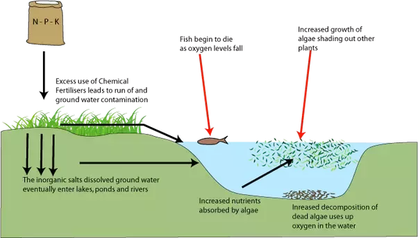

Some algal blooms are the result of an excess of nutrients (particularly phosphorus and nitrogen) into waters and higher concentrations of these nutrients in water cause increased growth of algae and green plants.
What is Eutrophication?
Eutrophication is when a body of water becomes over-enriched with minerals and nutrients that cause excessive algae growth. This process can lead to oxygen depletion in the reservoir.One example is "algal blooms" or a significant increase in phytoplankton in a body of water in response to increased nutrient levels. The main chemical elements contributing to eutrophication are phosphorus and nitrogen.

Web based
Рост микрофлоры снижает прозрачность воды, глубина проникновения лучей солнца уменьшается, в результате недостатка света начинается гибель придонных растений. Процесс отмирания донных водных растений влечёт за собой гибель прочих организмов.
Performance
В донном грунте, лишённом кислорода, идет анаэробный распад отмерших организмов с образованием таких сильных ядов, как фенолы и сероводород, и столь мощного «парникового газа» (по своему эффекту в этом плане превосходящего углекислый газ в 25 раз), как метан.
Cultural
В ночное время фотосинтез в этих растениях не происходит, но активный процесс дыхания продолжается. Летом, в предутренние часы тёплых дней, содержание кислорода в верхних горизонтах воды падает и наблюдается гибель аэробных организмов, населяющих эти горизонты и требовательных к содержанию кислорода.
Satellite-based images
of ocean color
The above view of phytoplankton-highlighted eddies in the Strait of Hormuz was collected by Landsat 8 on October 16, 2019. Musandam, Oman is on the left (west) and Iran is on the right (east). Click on the image to get a much larger (42 megabyte) version that includes part of the Gulf of Oman. Suomi-NPP/VIIRS collected a broader view of the region a few hours later.
Учёные из университета Мичигана разработали метод предупреждения эвтрофикации. В своём проекте они использовали буи, постоянно анализирующие воду.
Мы предлагаем модифицировать этот метод, добавив буям возможность излучать ультразвуковые волны, из-за возникновение в жидкости пузырьков с парогазовой смесью. Разрыв пузырьков сопровождается разрушением близлежащих клеток водорослей. Ранее подобный метод применялся пока что только в качестве эксперимента в Ладожском озере, но на практике не использовался из-за проблем с перевозкой оборудования, но такие автономные установки, работающие на солнечной энергии, полностью решают эту проблему.